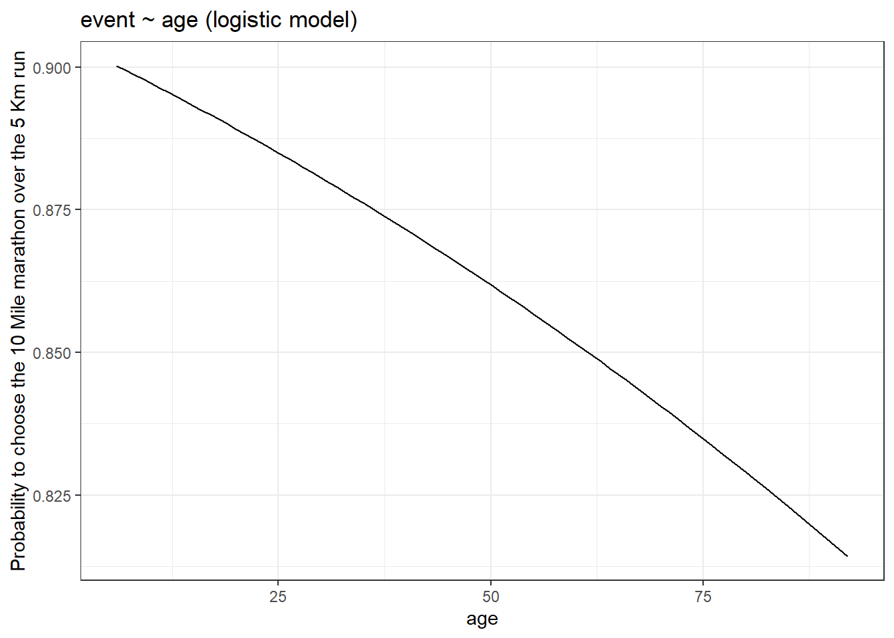
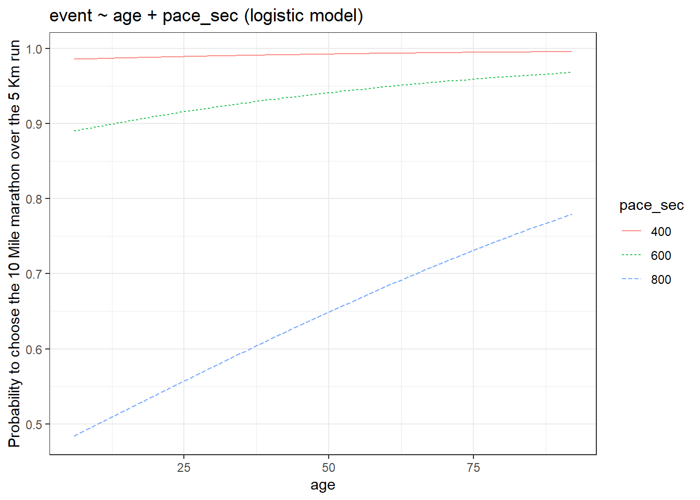

require("https://cdn.jsdelivr.net/npm/juxtaposejs@1.1.6/build/js/juxtapose.min.js")
.catch(() => null)
TL;DR
In this article you will learn;
Understanding the coefficients in a linear model
Why do linear models fail for some datasets and what are the limitations of a linear model
Two types of GLMs: Poisson and Logistic
Link functions
Understanding the coefficients in a Poisson and logistic models
Plotting Poisson and logistic models
Brief introduction to multiple regression using GLMs
Assumptions of GLMs: When to use GLMs
1 Prologue
This is the third tutorial in the series: Statistical modelling using R. In this tutorial we will work with datasets that fail the assumptions of linear models. We will first see what these assumptions are and then we will learn about generalised linear models which is an extension of the linear model architecture. So let’s go!
2 Making life easier
Please install and load the necessary packages and datasets which are listed below for a seamless tutorial session. (Not required but can be very helpful if you are following this tutorial code by code)
# Run the following lines of code
# Packages used in this tutorial
tutorial_packages <- rlang::quos(Stat2Data, modelsummary, devtools, COUNT, broom,
cherryblossom, datasets)
# Install required packages
lapply(lapply(tutorial_packages, rlang::quo_name),
install.packages,
character.only = TRUE
)
devtools::install_github("dtkaplan/statisticalModeling")
# Loading the libraries
lapply(lapply(tutorial_packages, rlang::quo_name),
library,
character.only = TRUE
)
# Datasets used in this tutorial
data("HorsePrices")
data("rwm1984")
data("run17")
data("mtcars")3 Understanding the coeffecients in a linear model
To quickly recap, a linear model tries to explain the variability seen in the response variable by estimating the coefficients for explanatory variables. These coefficients are nothing but your effect size or the slope of the explanatory variable calculated from the model. Consider the following example.
We will use the HorsePrices dataset from the Stat2Data package in R. We will model the price of the horses in this dataset to their height and age. We will use the summary() function to output the summary of the linear model.
library(Stat2Data)
library(statisticalModeling)
data("HorsePrices")
# Building a linear model
model_lm <- lm(Price ~ Age + Sex, data = HorsePrices)
# Plotting the model
fmodel(model_lm) + ggplot2::theme_bw() +
ggplot2::labs(title = "Price ~ Age + Height")
# Getting the summary of the linear model
summary(model_lm)
Call:
lm(formula = Price ~ Age + Sex, data = HorsePrices)
Residuals:
Min 1Q Median 3Q Max
-24988 -10296 -1494 8286 27653
Coefficients:
Estimate Std. Error t value Pr(>|t|)
(Intercept) 18199.7 4129.3 4.407 6.03e-05 ***
Age -220.1 393.8 -0.559 0.579
Sexm 17008.6 3639.6 4.673 2.52e-05 ***
---
Signif. codes: 0 '***' 0.001 '**' 0.01 '*' 0.05 '.' 0.1 ' ' 1
Residual standard error: 12540 on 47 degrees of freedom
Multiple R-squared: 0.3283, Adjusted R-squared: 0.2997
F-statistic: 11.48 on 2 and 47 DF, p-value: 8.695e-05# Calculating the effect sizes
effect_size(model_lm, ~ Age)In the summary of the model, in the coefficients section, the estimate column is nothing but effect sizes. Compare the estimate for ‘age’ in the model summary and the effect size of ‘age’ calculated from the effect_size() function, both are the same.
Recall that the equation for a straight line is;
y = mx+c
Where m is the slope of the line and c is the y-intercept.
We can see from the graph that there are two straight lines, therefore there will be two equations for the straight lines. Imagine y_1 to be the equation of the straight line for females (the red line) and similarly, y_2 is for males (the blue line). The equations for the straight lines are;
y_1 = m_1x_1 + c_1 \\ y_2 = m_2x_2 + c_2
From the graph, you can see that the slopes for both the lines are the same. This means that the effect size of age is the same across both the sex. Also, the slope should be a negative value because as age increases, price is decreasing for both sexes. From the model summary, the slope value for age is -220.10. Thus we have;
m_1 = m_2 = -220.1
Now recall how I explained that the effect size for a categorical exploratory variable is expressed in terms of change and that change is in terms of their y-intercepts.
Now R calculates intercepts in two ways. The default way or the first way is what is shown in the model summary. In the (Intercept) row, the estimated value is 18199.7 and this value is the y-intercept value for the straight line for ‘female’. You can easily verify this from the red line in the graph. Notice how the y-intercepts are the same as shown in the model summary and the plot. Now in the row ‘Sexm’, the estimated value shows how much difference is there from the estimated value shown in the (Intercept) row or otherwise how much difference in y-intercept is there between females and males. Since the difference is positive this means the y-intercept for males is 17008.6 higher than the y-intercept of females. Thus we have;
c_1 = 18199.7\\c_2 - c_1 = 17008.6
The intercept value by default is shown for the first level in the exploratory variable which here is female.
The second way is to individually show the corresponding y-intercept values for males and females. For that, we can use the expression -1 in the model formula.
library(Stat2Data)
library(statisticalModeling)
data("HorsePrices")
# Building a linear model with -1 expression
model_lm <- lm(Price ~ Age + Sex - 1, data = HorsePrices)
# Getting the summary of the linear model
summary(model_lm)
Call:
lm(formula = Price ~ Age + Sex - 1, data = HorsePrices)
Residuals:
Min 1Q Median 3Q Max
-24988 -10296 -1494 8286 27653
Coefficients:
Estimate Std. Error t value Pr(>|t|)
Age -220.1 393.8 -0.559 0.579
Sexf 18199.7 4129.3 4.407 6.03e-05 ***
Sexm 35208.2 3497.7 10.066 2.59e-13 ***
---
Signif. codes: 0 '***' 0.001 '**' 0.01 '*' 0.05 '.' 0.1 ' ' 1
Residual standard error: 12540 on 47 degrees of freedom
Multiple R-squared: 0.8429, Adjusted R-squared: 0.8329
F-statistic: 84.05 on 3 and 47 DF, p-value: < 2.2e-16Now you get individual y-intercept values for all the levels in the data. There will be slight decimal differences while adding up the values but the concept is the same.
c_1 = 18199.7\\c_2 = 35208.2 = 17008.6 + 18199.7
So the first way compares differences between groups by taking the first group as the reference and in a second way, we can see the actual change in the respective group.
4 Limitations of linear models
Four assumptions are required to be satisfied to be able to do linear modelling;
- The values in the datasets are normally distributed
- The residuals are normally distributed
- The values in the datasets are continuous
- Variables form a linear relationship with each other
Many datasets fail these assumptions. Survival data with binary responses or data with count values are both non-normal and discontinuous. Linear modelling won’t do any good in analysing these datasets. So what is the solution? The solution is to extend linear models and generalize them so that they can accept non-normal distributions. In R, the process is simple and we have seen it being used in logistic regression in tutorial 1 using the glm() function. Therefore glm() function calls for the generalized model in R and the type of model is specified by the distribution of the data. If the data is count type then we can use the Poisson family distribution and if the data is binomial then use the binomial family distribution. We will see both of these in detail further in the tutorial. The process of generalizing a linear model is through ‘non-linear link functions’ which link the regression coefficients to the distribution and allow the linear model to be generalised. We will learn more about this in the later sections.
The syntax for the glm() function is as follows;
glm(formula, data, family = "")For the Poisson regression model we can specify family = "poisson" and for the binomial regression model we can specify family = "binomial".
Since the lm() function is only applicable for normal or Gaussian distributions;
glm(formula, data, family = "gaussian") = lm(formula, data)
Therefore a linear model is a generalized linear model with the Gaussian family.
5 Poisson regression model
As mentioned earlier, the Poisson model is used if the dataset contains count data. Count data can be no of things sold in a shop, no people with cancer in a city or no of visitors in a shop. Intuitively, we can say that count data ranges from 0 to infinity. There is no negative or decimal count data. Thus your dataset should only contain 0 or positive integer values for the Poisson model to work. Also, the values in the dataset should have been obtained in the same manner. For example: let’s say your dataset contains count data for the no. of people coming to the shop per day, then the same dataset should not contain values for no. of people coming to the shop per week, as they are sampled differently in terms of time. Lastly, if your dataset has a variance greater than the mean or if you have lots of zeros in your data then some modifications have to be done to be able to use the Poisson regression model.
In short, you should not use the Poisson regression model if you have the following conditions;
- Dataset contains negative and/or non-integer values
- Dataset is sampled across in a different manner (no. of people per day vs. no. of people per week)
- Dataset has a variance greater than its mean (Over-dispersed data)
- Dataset has lots of zero values (Zero-inflated data)
Let us build a Poisson model. We will use the rwm1984 dataset from the {COUNT} package in R. The dataset is a German health registry for the year 1984. We are interested in seeing whether the number of visits to the doctor during a year (docvis) is associated with age (age). Since we have count data we will build a Poisson model to see this association.
if (!require(COUNT)) install.packages('COUNT')
library(COUNT)
data("rwm1984")
# Building a poisson model
model_poisson <- glm(docvis ~ age, data = rwm1984, family = "poisson")
# Printing model output
summary(model_poisson)
Call:
glm(formula = docvis ~ age, family = "poisson", data = rwm1984)
Deviance Residuals:
Min 1Q Median 3Q Max
-3.229 -2.263 -1.271 0.326 26.383
Coefficients:
Estimate Std. Error z value Pr(>|z|)
(Intercept) -0.0983153 0.0399295 -2.462 0.0138 *
age 0.0273395 0.0008204 33.325 <2e-16 ***
---
Signif. codes: 0 '***' 0.001 '**' 0.01 '*' 0.05 '.' 0.1 ' ' 1
(Dispersion parameter for poisson family taken to be 1)
Null deviance: 25791 on 3873 degrees of freedom
Residual deviance: 24655 on 3872 degrees of freedom
AIC: 31742
Number of Fisher Scoring iterations: 6Apart from the summary() function, we also use the tidy() function from the broom package in R to print the outputs of the model as a data frame.
if (!require(broom)) install.packages('broom')
library(COUNT)
library(broom)
data("rwm1984")
# Building a poisson model
model_poisson <- glm(docvis ~ age, data = rwm1984, family = "poisson")
# Printing model output using tidy()
tidy(model_poisson)Sometimes we are interested in extracting the coefficients or finding out the confidence intervals from the model.
library(COUNT)
data("rwm1984")
# Building a poisson model
model_poisson <- glm(docvis ~ age, data = rwm1984, family = "poisson")
# Extracting the coefficients
coef(model_poisson)(Intercept) age
-0.09831529 0.02733953 # Estimating the confidence interval
confint(model_poisson) 2.5 % 97.5 %
(Intercept) -0.1767936 -0.02027057
age 0.0257330 0.028948956 Logistic regression model
In tutorial 1, we briefly saw what logistic regression was. We use the logistic model when;
- Data is binary (0/1)
- Data has only two mutually exclusive values (Alive/Dead or Yes/No or Win/Lose or Pass/Fail)
- Data has only two values choices or behaviour (Non-veg/Veg, Wet/Dry)
In short, for a logistic regression model, the model outputs probabilities (p) for binary outcomes in the response variable (y).
y = Binomial(p)
Let us build a logistic model using run17 dataset from the cherryblossom package in R. We have seen this dataset in the first tutorial. The dataset contains details for all 19,961 runners in the 2017 Cherry Blossom Run, which is an annual road race that takes place in Washington, DC, USA. The Cherry Blossom Run has two events; a 10 Mile marathon and a 5 Km run. We will be building a logistic model to whether event choice is predicted by the participant’s age.
if (!require(cherryblossom)) install.packages('cherryblossom')
library(dplyr)
library(cherryblossom)
data("run17")
# Tidying the data
run17_tidy <- run17
run17_tidy$event <- recode(run17_tidy$event, "10 Mile" = "Ten_Mile", "5K" = "Five_Km")
run17_tidy$event <- as.factor(run17_tidy$event)
# Building a logistic model
model_binomial <- glm(event ~ age, data = run17_tidy, family = "binomial")
# Printing model output
summary(model_binomial)
Call:
glm(formula = event ~ age, family = "binomial", data = run17_tidy)
Deviance Residuals:
Min 1Q Median 3Q Max
-2.1471 0.4963 0.5102 0.5285 0.6241
Coefficients:
Estimate Std. Error z value Pr(>|z|)
(Intercept) 2.250155 0.074991 30.006 < 2e-16 ***
age -0.008390 0.001897 -4.423 9.74e-06 ***
---
Signif. codes: 0 '***' 0.001 '**' 0.01 '*' 0.05 '.' 0.1 ' ' 1
(Dispersion parameter for binomial family taken to be 1)
Null deviance: 15130 on 19959 degrees of freedom
Residual deviance: 15111 on 19958 degrees of freedom
(1 observation deleted due to missingness)
AIC: 15115
Number of Fisher Scoring iterations: 46.1 Bernouli and binomial distributions
Both Bernoulli and binomial distributions form the basis for logistic regression. The main difference between these two distributions is that Bernoulli is associated with probabilities of a result in a single event whereas binomial is associated with probabilities of a result in multiple events. For example; the chance of getting a head in a single coin toss follows a Bernoulli distribution and the chance of getting a head in 10 coin tosses follows a binomial distribution.
In R we have the option to either use binomial or Bernoulli. So how do we know when to use which? The short answer is that it depends on the data structure. For wide format data, the binomial distribution is used and for long format data, the Bernoulli distribution is used. You can learn more about long format and wide format data here.
library(dplyr)
library(tidyr)
library(cherryblossom)
data("run17")
# Tidying the data
run17_tidy <- run17 %>% dplyr::select(event, age)
run17_tidy$event <- recode(run17_tidy$event, "10 Mile" = "Ten_Mile", "5K" = "Five_Km")
run17_tidy$event <- as.factor(run17_tidy$event)
# Long format
head(run17_tidy)# Converting the dataset to wide format
run17_wide <- run17_tidy %>% group_by(age, event) %>%
summarise(count = n())
run17_wide <- run17_wide %>% pivot_wider(names_from = "event", values_from = "count")
run17_wide[is.na(run17_wide)] <- 0
# Wide format
head(run17_wide)In the above case, for long format data, we have a single entry in each row corresponding to individual data but in the wide format, we have each row entry corresponding to a single age group. Another way of expressing the data in a wide format is to calculate the percentage of choices, which is by dividing the total number of choices for the first category by the total number of choices for both categories.
So for wide format data; If our data structure has the absolute value of the no. of choices made then we use cbind() in the model formula. If we have percentages, then we use weights = () in the glm() function.
So in summary we choose between Bernoulli and binomial by checking the following questions;
- Is the data in long or wide format?
- Do we have individual or group data?
- Are we interested in individuals or groups?
Let us build logistic models for both long format and wide format data.
library(dplyr)
library(tidyr)
library(cherryblossom)
data("run17")
# Tidying the data
run17_tidy <- run17 %>% dplyr::select(event, age)
run17_tidy$event <- recode(run17_tidy$event, "10 Mile" = "Ten_Mile", "5K" = "Five_Km")
run17_tidy$event <- as.factor(run17_tidy$event)
# Building a logistic model with long format
model_logistic_long <- glm(event ~ age, data = run17_tidy, family = "binomial")
# Converting the dataset to wide format
run17_tidy_1 <- run17_tidy %>% mutate(event_choice = ifelse(event == "Ten_Mile", 1, 0))
run17_wide <- run17_tidy_1 %>% group_by(age, event) %>%
summarise(count = n())
run17_wide <- run17_wide %>% pivot_wider(names_from = "event", values_from = "count")
run17_wide[is.na(run17_wide)] <- 0
# Building a logistic model with wide format
# We use cbind() to bind the two choices
model_logistic_wide_1 <- glm(cbind(Five_Km, Ten_Mile) ~ age,
data = run17_wide, family = "binomial")
# Building a logistic model with wide format
# We use percentage of choice and the weight or number of observations per group
run17_wide$prect_ten_mile <- run17_wide$Ten_Mile / (run17_wide$Ten_Mile + run17_wide$Five_Km)
model_logistic_wide_2 <- glm(prect_ten_mile ~ age,
data = run17_wide, family = "binomial",
weights = (run17_wide$Ten_Mile + run17_wide$Five_Km))
# Printing model outputs
summary(model_logistic_long)
Call:
glm(formula = event ~ age, family = "binomial", data = run17_tidy)
Deviance Residuals:
Min 1Q Median 3Q Max
-2.1471 0.4963 0.5102 0.5285 0.6241
Coefficients:
Estimate Std. Error z value Pr(>|z|)
(Intercept) 2.250155 0.074991 30.006 < 2e-16 ***
age -0.008390 0.001897 -4.423 9.74e-06 ***
---
Signif. codes: 0 '***' 0.001 '**' 0.01 '*' 0.05 '.' 0.1 ' ' 1
(Dispersion parameter for binomial family taken to be 1)
Null deviance: 15130 on 19959 degrees of freedom
Residual deviance: 15111 on 19958 degrees of freedom
(1 observation deleted due to missingness)
AIC: 15115
Number of Fisher Scoring iterations: 4summary(model_logistic_wide_1)
Call:
glm(formula = cbind(Five_Km, Ten_Mile) ~ age, family = "binomial",
data = run17_wide)
Deviance Residuals:
Min 1Q Median 3Q Max
-2.9381 -0.6116 0.4472 1.7556 7.5007
Coefficients:
Estimate Std. Error z value Pr(>|z|)
(Intercept) -2.245070 0.074961 -29.950 < 2e-16 ***
age 0.008267 0.001897 4.358 1.31e-05 ***
---
Signif. codes: 0 '***' 0.001 '**' 0.01 '*' 0.05 '.' 0.1 ' ' 1
(Dispersion parameter for binomial family taken to be 1)
Null deviance: 411.90 on 79 degrees of freedom
Residual deviance: 393.17 on 78 degrees of freedom
AIC: 711.65
Number of Fisher Scoring iterations: 4summary(model_logistic_wide_2)
Call:
glm(formula = prect_ten_mile ~ age, family = "binomial", data = run17_wide,
weights = (run17_wide$Ten_Mile + run17_wide$Five_Km))
Deviance Residuals:
Min 1Q Median 3Q Max
-7.5007 -1.7556 -0.4472 0.6116 2.9381
Coefficients:
Estimate Std. Error z value Pr(>|z|)
(Intercept) 2.245070 0.074961 29.950 < 2e-16 ***
age -0.008267 0.001897 -4.358 1.31e-05 ***
---
Signif. codes: 0 '***' 0.001 '**' 0.01 '*' 0.05 '.' 0.1 ' ' 1
(Dispersion parameter for binomial family taken to be 1)
Null deviance: 411.90 on 79 degrees of freedom
Residual deviance: 393.17 on 78 degrees of freedom
AIC: 711.65
Number of Fisher Scoring iterations: 4Please note that all three models give the same coefficients but the model with the long format structure has higher degrees of freedom as compared to the other two models with the wide format.
7 Link functions
The ‘link function’ is what enables us to generalize a linear model so that we can use it in datasets which do not meet the assumptions of a linear model. In a way, it is a function which transforms the coefficients of the explanatory variables to form a linear combination with each other like in the case of a linear regression model.
- For
poissonfamily models, the link function islogand thus the coefficients of the model are in log-scale. - For ‘binomial’ family models, there are two link functions;
logitandprobit
The logit link function transforms the probabilities to ‘log-odds values’ which are real numbers ranging from -\infty to +\infty and gives rise to a linear equation similar to what is seen in a linear regression model. In logistic regression, by default, the logit link function is used.
logit(p) = m_1x_1 + c_1 = log(\frac{p}{1-p})
The probit link function is also similar to the logit link but is based on the cumulative standard normal distribution function. By default, the logistic regression in the glm() function uses the logit link function.
To use another link function, we should specify the link function in the family;
family = "binomial" = family = binomial(link = "probit"): By default, logit link function is used
family = binomial(link = "probit"): Using the probit link function
Look at the graphs given below. Use the slider to compare them. You can see that the model with the logit link function has a slightly longer or fatter tail, as both the tail ends reaches the limit slower as compared to the model with the probit link function. Therefore, in general, the logit link function is better at modelling outliers or rare events as compared to probit.
Code
library(datasets)
library(statisticalModeling)
# Building a logistic model with logit link which is the default
mtcars_logit <- glm(vs ~ mpg, data=mtcars, family= "binomial")
# Building a logistic model with probit link which is the default
mtcars_probit <- glm(vs ~ mpg, data=mtcars, family=binomial(link="probit"))
# Plotting logistic model with logit link
fmodel(mtcars_logit) + ggplot2::theme_bw() +
ggplot2::labs(title = "VS ~ mpg (logistic model with logit link)")
# Plotting logistic model with probit link
fmodel(mtcars_probit) + ggplot2::theme_bw() +
ggplot2::labs(title = "VS ~ mpg (logistic model with probit link)")library(datasets)
library(statisticalModeling)
# Building a logistic model with logit link which is the default
mtcars_logit <- glm(vs ~ mpg, data=mtcars, family= "binomial")
# Building a logistic model with probit link which is the default
mtcars_probit <- glm(vs ~ mpg, data=mtcars, family=binomial(link="probit"))
# Plotting logistic model with logit link
fmodel(mtcars_logit) + ggplot2::theme_bw() +
ggplot2::labs(title = "VS ~ mpg (logistic model with logit link)")
# Plotting logistic model with probit link
fmodel(mtcars_probit) + ggplot2::theme_bw() +
ggplot2::labs(title = "VS ~ mpg (logistic model with probit link)")
8 Simulating logit and probit
We can simulate a logit distribution using the plogis() and the rbinom() functions together. The rbinom() is a random number generator function which has additional input parameters;
n = Number of random numbers to generate size = Number of trails p = Probability of success
# Converting a logit scale value to probability value
p <- plogis(2)
# Simulating a logit distribution
rbinom(n = 10, size = 1, prob = p) [1] 1 1 1 1 1 1 1 1 0 1A probit distribution can be made using the pnrom() and the rbinom() functions together.
9 Understanding the coefficients in a Poisson model
The link function for the Poisson regression model is the log function. Now we will see how to interpret the coefficients/effect sizes of a Poisson regression model. Let us quickly recall how we interpreted the coefficients/effect sizes of a linear regression model. We will use our earlier example but with only ‘Sex’ as the exploratory variable.
library(Stat2Data)
data("HorsePrices")
# Building a linear model
model_lm <- lm(Price ~ Sex, data = HorsePrices)
# Getting the summary of the linear model
summary(model_lm)
Call:
lm(formula = Price ~ Sex, data = HorsePrices)
Residuals:
Min 1Q Median 3Q Max
-23730 -10061 -1255 8495 28495
Coefficients:
Estimate Std. Error t value Pr(>|t|)
(Intercept) 16505 2783 5.931 3.20e-07 ***
Sexm 17225 3593 4.794 1.62e-05 ***
---
Signif. codes: 0 '***' 0.001 '**' 0.01 '*' 0.05 '.' 0.1 ' ' 1
Residual standard error: 12450 on 48 degrees of freedom
Multiple R-squared: 0.3238, Adjusted R-squared: 0.3097
F-statistic: 22.98 on 1 and 48 DF, p-value: 1.619e-05In algebraic form, the model formula for a linear model is;
y \sim \beta_0 + \beta_1x_1 + \beta_2x_2 + .. + \epsilon
From the model summary, we have;
y = Price\\ \beta_0 = 16505 = Reference\,intercept\,(female)\\ \beta_1 = 17225 = Difference\,from\,the\,reference\,intercept\,(for\,male)\\ \epsilon = Error\,value\,of\,the\,model
We also have;
\beta_0 + \beta_1 = Average\,price\,of\,male\,horses
This shows that the coefficient in a linear model is additive. But when we come to the Poisson model, the link function is a log function which takes in the parameter \lambda of the Poisson distribution. We have;
Parameter\,of\,poisson\,distribution:\lambda = e^{\beta_0 + \beta_1x_1 + \beta_2x_2 + .. + \epsilon}\\ Link\,function: ln(\lambda) = \beta_0 + \beta_1x_1 + \beta_2x_2 + .. + \epsilon
Here the coefficients are no longer additive as they are in log scale. Therefore the coefficients are multiplicative. Let us look at the Poisson regression model we created earlier;
library(COUNT)
data("rwm1984")
# Building a poisson model
model_poisson <- glm(docvis ~ age, data = rwm1984, family = "poisson")
# Printing model outputs
summary(model_poisson)
Call:
glm(formula = docvis ~ age, family = "poisson", data = rwm1984)
Deviance Residuals:
Min 1Q Median 3Q Max
-3.229 -2.263 -1.271 0.326 26.383
Coefficients:
Estimate Std. Error z value Pr(>|z|)
(Intercept) -0.0983153 0.0399295 -2.462 0.0138 *
age 0.0273395 0.0008204 33.325 <2e-16 ***
---
Signif. codes: 0 '***' 0.001 '**' 0.01 '*' 0.05 '.' 0.1 ' ' 1
(Dispersion parameter for poisson family taken to be 1)
Null deviance: 25791 on 3873 degrees of freedom
Residual deviance: 24655 on 3872 degrees of freedom
AIC: 31742
Number of Fisher Scoring iterations: 6Here we have;
y = No.\,of\,days\,of\,doctor\,visits\\ \beta_0 = -0.0983153 = Reference\,intercept\\ \beta_1 = 0.0273395 = Difference\,from\,the\,reference\,intercept\\ \epsilon = Error\,value\,of\,the\,model
Now to find the average effect of age on the no. of days of doctor visits, we have to multiply \beta_0 and \beta_1 instead adding the values like in the case of a linear model.
\beta_0 * \beta_1 = ln(average\,effect\,of\,age\,on\,the\,no.\,of\,days\,of\,doctor\,visits)\\ e^{\beta_0 + \beta_1} = average\,effect\,of\,age\,on\,the\,no.\,of\,days\,of\,doctor\,visits
But if we exponentiate the coefficients, then we get the raw value, which we can add like in the case of a linear model.
10 Plotting a Poisson model
You can either use the fmodel() function from the {statisticalModeling} package or use the ggplot() function from the ggplot2 package.
For the ggplot() function, we specify ‘poisson’ model in the method.args = list(family = " ") parameter inside geom_smooth() argument.
library(COUNT)
library(ggplot2)
library(statisticalModeling)
data("rwm1984")
# Building a poisson model
model_poisson <- glm(docvis ~ age, data = rwm1984, family = "poisson")
# Plotting using the fmodel() function
fmodel(model_poisson) + geom_point(data = rwm1984) +
theme_bw() +
labs(title = "docvis ~ age (poisson model)")
# Plotting using the ggplot() function
ggplot(data = rwm1984, aes(age, docvis)) +
geom_jitter(width = 0.05, height = 0.05) +
geom_smooth(method = 'glm', method.args = list(family = 'poisson')) +
theme_bw() +
labs(title = "docvis ~ age (poisson model)")
11 Understanding the coefficients in a logistic model
In a linear model, the coefficients were straight forward and in the Poisson model, after exponentiating the coefficients, the values were similar to that of the linear model. But for a logistic model transformation won’t help and it’s not as straightforward as compared to the other models. So instead, the coefficient values are converted to odds ratio. The odds ratio calculates the relative odds of two events occurring. For example, let us imagine a football team that is expected to win 10 games for every game they lose. Then the odds of winning the odds of losing would be 10 to 1. And the odds ratio would be 10/1 which is 10.
As mentioned earlier, the default link function for a logistic model is logit, so our coefficients start as ‘log-odds’ which when exponentiated will give us the odds ratio.
In general, odds-ratio values are interpreted in the following way;
- OR = 1: Coefficient has no effect
- OR < 1: Coefficient decreased the odds
- OR > 1: Coefficient increases the odds
Imagine a football team is singing two players; A and B. Odds-ratio of winning is 3 if player A joins the team, which means, in that season, if player A joins, the team is bound to win 3 games for every game they lose. Likewise, if player B joins let’s say the odds ratio is 0.5, which means they will win 1 game for every 2 games they lose. The odds ratio is often reported along the 95% confidence intervals.
Let us calculate the odds ratio and the confidence interval of the model we previously created. We will use the tidy() function from broom package in R.
library(dplyr)
library(broom)
library(cherryblossom)
data("run17")
# Tidying the data
run17_tidy <- run17
run17_tidy$event <- recode(run17_tidy$event, "10 Mile" = "Ten_Mile", "5K" = "Five_Km")
run17_tidy$event <- as.factor(run17_tidy$event)
# Building a logistic model
model_binomial <- glm(event ~ age, data = run17_tidy, family = "binomial")
# Finding the odds ratio and confidence interval
tidy(model_binomial, exponentiate = T, conf.int = T)The odds ratio of age to the event is ~ 0.9916 which is almost 1. This suggests that when age increases by 1 year, there 50% chance that the participant chooses 5Km over 10 Mile event run (the odds are 1 to 1). So basically age does not seem to have an association with event choice. Also note that for the 95% confidence interval, the upper bound almost includes 1 which further reinforces the notion that age is not associated with the event choice.
12 Plotting a logistic model
Like earlier, we can either use fmodel() function from the {statisticalModeling} package or use the ggplot() function from the ggplot2 package.
For the ggplot() function, we specify the ‘binomial’ model in the method.args = list(family = " ") parameter inside geom_smooth() argument. Converting the event to numeric form and subtracting 1 from it will make the choice values stay between zero and one. In the ggplot2 graph, the value 1 corresponds to the 10 Mile run and the value 0 corresponds to the 5 Km run.
library(dplyr)
library(cherryblossom)
library(ggplot2)
library(statisticalModeling)
data("run17")
# Tidying the data
run17_tidy <- run17 %>% dplyr::select(event, age)
run17_tidy$event <- recode(run17_tidy$event, "10 Mile" = "Ten_Mile", "5K" = "Five_Km")
run17_tidy$event <- as.factor(run17_tidy$event)
# Building a logistic model with logit link
model_logistic <- glm(event ~ age, data = run17_tidy, family = "binomial")
# Plotting the logistic model with link function using fmodel()
fmodel(model_logistic) + theme_bw() +
labs(title = "event ~ age (logistic model)",
y = "Probability to choose the 10 Mile marathon over the 5 Km run")
# Plotting the logistic model with link function using ggplot()
ggplot(run17_tidy, aes(age, as.numeric(event) - 1)) + geom_jitter(width = 0, height = 0.05) +
geom_smooth(method = 'glm', method.args = list(family = "binomial")) +
theme_bw() + labs(title = "event ~ age (logistic model)",
y = "Probability to choose the 10 Mile marathon over the 5 Km run")We can also plot for different link functions in the logistic model.
library(dplyr)
library(cherryblossom)
data("run17")
# Tidying the data
run17_tidy <- run17 %>% dplyr::select(event, age)
run17_tidy$event <- recode(run17_tidy$event, "10 Mile" = "Ten_Mile", "5K" = "Five_Km")
run17_tidy$event <- as.factor(run17_tidy$event)
# Building a logistic model with logit link
model_logistic_long <- glm(event ~ age, data = run17_tidy, family = "binomial")
# Plotting the logistic model with logit and probit link function using ggplot()
# Same graph as the earlier one
ggplot(run17_tidy, aes(age, as.numeric(event) - 1)) + geom_jitter(width = 0, height = 0.05) +
geom_smooth(method = 'glm', method.args = list(family = binomial(link = 'logit')),
colour = "red") +
geom_smooth(method = 'glm', method.args = list(family = binomial(link = 'probit')),
colour = "green") +
theme_bw() + labs(title = "event ~ age (logistic model; red: logit, green: probit)",
y = "Probability to choose the 10 Mile marathon over the 5 Km run")
As you can see the lines corresponding to logit and probit link functions are very similar.
13 Multiple regression with GLMs
As seen with linear models, GLMs are also affected by collinearity. Therefore, the order of the explanatory variables in the model formula matters for GLMs, if there exists a correlation between the explanatory variables used. To check the correlation between two variables we can use the cor() function.
Let us look at this in action using the logistic model we created earlier, but this time we will also add the pace_sec variable which tells the average time (in seconds) to complete a mile.
library(dplyr)
library(cherryblossom)
data("run17")
# Tidying the data
run17_tidy <- run17
run17_tidy$event <- recode(run17_tidy$event, "10 Mile" = "Ten_Mile", "5K" = "Five_Km")
run17_tidy$event <- as.factor(run17_tidy$event)
# Finding the correlation between pace_sec and age
# Remove any NAs prior to finding the correlation
run17_tidy <- drop_na(run17_tidy)
cor(run17_tidy$pace_sec, run17_tidy$age)[1] 0.1620674# Building a logistic model wiht pace_sec + age
model_logistic_1 <- glm(event ~ pace_sec + age, data = run17_tidy, family = "binomial")
# Building a logistic model wiht age + pace_sec
model_logistic_2 <- glm(event ~ age + pace_sec, data = run17_tidy, family = "binomial")
# Printing the results
summary(model_logistic_1)
Call:
glm(formula = event ~ pace_sec + age, family = "binomial", data = run17_tidy)
Deviance Residuals:
Min 1Q Median 3Q Max
-3.2235 0.1997 0.3203 0.4770 1.2549
Coefficients:
Estimate Std. Error z value Pr(>|z|)
(Intercept) 8.4756604 0.1606570 52.756 < 2e-16 ***
pace_sec -0.0107900 0.0002218 -48.650 < 2e-16 ***
age 0.0154362 0.0022611 6.827 8.69e-12 ***
---
Signif. codes: 0 '***' 0.001 '**' 0.01 '*' 0.05 '.' 0.1 ' ' 1
(Dispersion parameter for binomial family taken to be 1)
Null deviance: 15118 on 19956 degrees of freedom
Residual deviance: 11404 on 19954 degrees of freedom
AIC: 11410
Number of Fisher Scoring iterations: 6summary(model_logistic_2)
Call:
glm(formula = event ~ age + pace_sec, family = "binomial", data = run17_tidy)
Deviance Residuals:
Min 1Q Median 3Q Max
-3.2235 0.1997 0.3203 0.4770 1.2549
Coefficients:
Estimate Std. Error z value Pr(>|z|)
(Intercept) 8.4756604 0.1606570 52.756 < 2e-16 ***
age 0.0154362 0.0022611 6.827 8.69e-12 ***
pace_sec -0.0107900 0.0002218 -48.650 < 2e-16 ***
---
Signif. codes: 0 '***' 0.001 '**' 0.01 '*' 0.05 '.' 0.1 ' ' 1
(Dispersion parameter for binomial family taken to be 1)
Null deviance: 15118 on 19956 degrees of freedom
Residual deviance: 11404 on 19954 degrees of freedom
AIC: 11410
Number of Fisher Scoring iterations: 6You can see that the model summary is identical, even with different ordering of the exploratory variables. This is because the correlation coefficient is ~ 0.17 which means there is a weak correlation between the used exploratory variables. So before building a model it’s a good practice to check if the exploratory variables exhibit collinearity.
14 Assumptions of GLMs
GLMs extend the linear model via link function which transforms the coefficient into a linear combination which can be interpreted in a similar way to that seen in linear models. Nevertheless, there are important assumptions which are to be met by the data to apply any GLM.
- Simpson’s paradox does not occur
Simpson’s paradox occurs when we fail to include an exploratory variable which significantly changes the model output after its addition. Consider the graphs given below. Please use the slider to compare them.
Code
library(dplyr)
library(cherryblossom)
library(statisticalModeling)
data("run17")
# Tidying the data
run17_tidy <- run17
run17_tidy$event <- recode(run17_tidy$event, "10 Mile" = "Ten_Mile", "5K" = "Five_Km")
run17_tidy$event <- as.factor(run17_tidy$event)
# Building a logistic model with age
model_logistic_1 <- glm(event ~ age, data = run17_tidy, family = "binomial")
# Plotting the model
fmodel(model_logistic_1) + theme_bw() +
labs(title = "event ~ age (logistic model)",
y = "Probability to choose the 10 Mile marathon over the 5 Km run")
# Building a logistic model with age + pace_sec
model_logistic_2 <- glm(event ~ age + pace_sec, data = run17_tidy, family = "binomial")
# Plotting the model
fmodel(model_logistic_2) + theme_bw() +
labs(title = "event ~ age + pace_sec (logistic model)",
y = "Probability to choose the 10 Mile marathon over the 5 Km run")library(dplyr)
library(cherryblossom)
library(statisticalModeling)
data("run17")
# Tidying the data
run17_tidy <- run17
run17_tidy$event <- recode(run17_tidy$event, "10 Mile" = "Ten_Mile", "5K" = "Five_Km")
run17_tidy$event <- as.factor(run17_tidy$event)
# Building a logistic model with age
model_logistic_1 <- glm(event ~ age, data = run17_tidy, family = "binomial")
# Plotting the model
fmodel(model_logistic_1) + theme_bw() +
labs(title = "event ~ age (logistic model)",
y = "Probability to choose the 10 Mile marathon over the 5 Km run")
# Building a logistic model with age + pace_sec
model_logistic_2 <- glm(event ~ age + pace_sec, data = run17_tidy, family = "binomial")
# Plotting the model
fmodel(model_logistic_2) + theme_bw() +
labs(title = "event ~ age + pace_sec (logistic model)",
y = "Probability to choose the 10 Mile marathon over the 5 Km run")
In the first model, predicting event choice with just age suggests that with increasing age, there is less chance that people will participate in the 10 Mile marathon. But when you also add the pace of participants into the model formula then you get completely different results (and absurd too!). The second model indicates that participants with a high pace (shorter y-axis values in the graph) irrespective of age will almost always choose the 10 Mile marathon. So our interpretation is completely changed and this is an example of Simpson’s paradox.
- Variables follow linear relationship and are monotonic
Like in the case of linear models, GLMs also require that the variables follow a linear change. Monotonic means that the change is either always increasing or decreasing.
- Variables should independent
The effect sizes of one variable should not influence the effect size of another variable. We have seen this in detail for linear models. If they are independent, then we have to represent them as interaction terms. In this case, the order also matters while inputting them into the model formula.
- Over dispersion
Overdispersion occurs when the datasets have a lot of zeros or ones in the case of the binomial distribution and a lot of zeros in the case of the Poisson distribution. Also if the variance is greater than the mean of the data, then again the model is over-dispersed.
15 Conclusion
This marks the end of the introduction to generalised linear models. In summary, we learned;
- Understanding the coefficients in a linear model
- Why do linear models fail for some datasets and what are the limitations of a linear model
- Two types of GLMs: Poisson and Logistic
- Link functions
- Understanding the coefficients in a Poisson and logistic models
- Plotting Poisson and logistic models
- Brief introduction to multiple regression using GLMs
- Assumptions of GLMs: When to use GLMs
In the next tutorial, we will take our understanding of GLMs to the next level and learn about ‘Hierarchical and Mixed Effects Models in R’. See you then!
Last updated on
[1] "2022-08-23 13:25:19 IST"Reuse
Citation
BibTeX citation:
@online{johnson2022,
author = {Jewel Johnson},
title = {Generalized Linear Models in {R}},
date = {2022-08-23},
url = {https://jeweljohnsonj.github.io/one-carat-blog//tutorials/stat_model/glm_stat_model.html},
langid = {en}
}
For attribution, please cite this work as:
Jewel Johnson. 2022. “Generalized Linear Models in R.”
August 23, 2022. https://jeweljohnsonj.github.io/one-carat-blog//tutorials/stat_model/glm_stat_model.html.